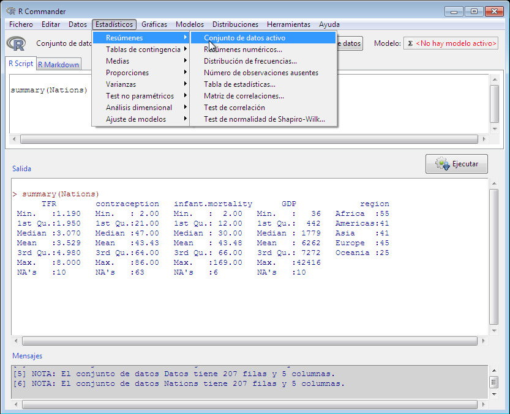
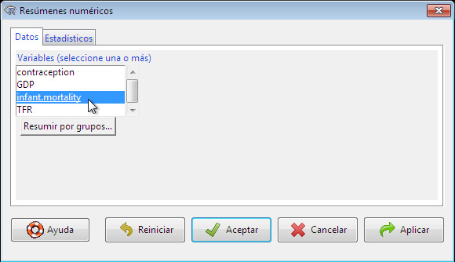
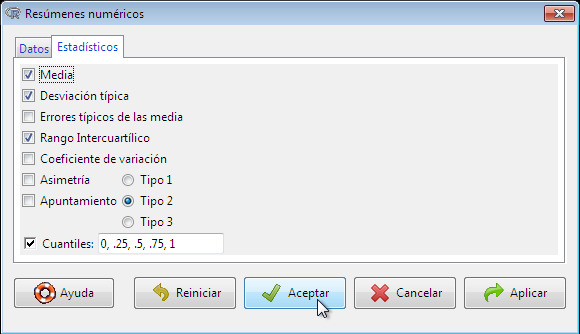
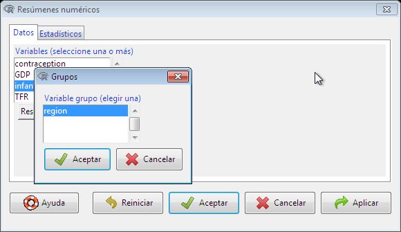
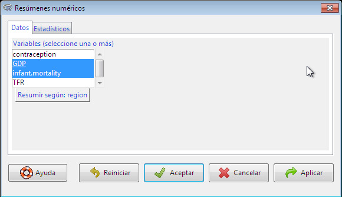
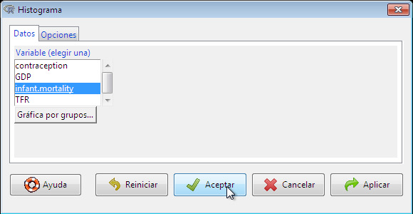
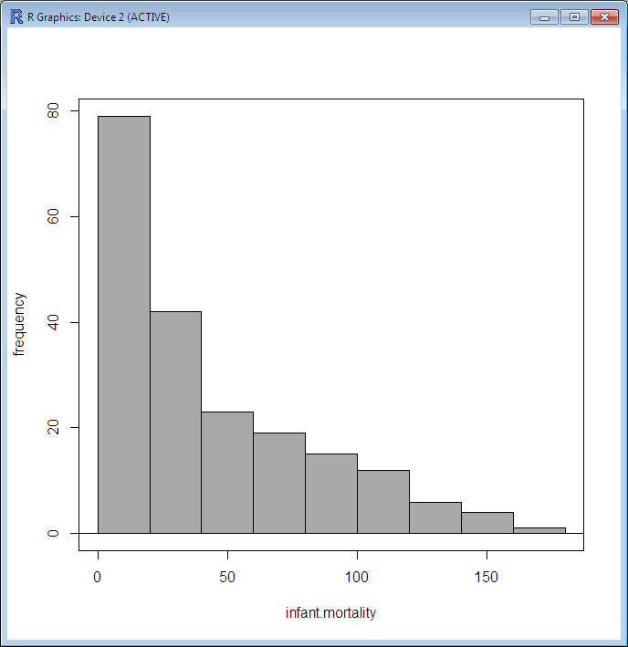

Once there is an active data set, you can use the R Commander menus to produce a variety of numerical summaries and graphs. I will describe just a few basic examples here. A good GUI should be largely self-explanatory. If you prefer a more extensive introduction to the R Commander, see [1].Una vez que haya un conjunto de datos activo, puede utilizar los menús del R Commander para producir una variedad de resúmenes numéricos y gráficos. Aquí describiré solo algunos ejemplos básicos. Una buena GUI debería ser en gran medida autoexplicativa. Si prefiere una introducción más exhaustiva al R Commander, consulte [1].
In the initial examples below, I assume that the active data set is the Nations data set, read from a text file in the previous section. If you typed in the five-observation data set from [2], or read in the Prestige data set from the car package — operations that were also described in the previous section — then one of these is the active data set. Recall that you can change the active data set by clicking on the flat button with the active data set’s name near the top left of the R Commander window, choosing from among a list of data sets currently resident in memory.En los ejemplos iniciales a continuación, asumo que el conjunto de datos activo es el conjunto de datos Nations, leído desde un archivo de texto en la sección anterior. Si introdujo el conjunto de datos de cinco observaciones de [2], o leyó el conjunto de datos Prestige del paquete car — operaciones que también se describieron en la sección anterior — entonces uno de estos es el conjunto de datos activo. Recuerde que puede cambiar el conjunto de datos activo haciendo clic en el botón plano con el nombre del conjunto de datos activo cerca de la parte superior izquierda de la ventana de R Commander, eligiendo entre una lista de conjuntos de datos actualmente residentes en la memoria.

Selecting Statistics -> Summaries -> Active data set produces the results shown in Figure 8. For each numerical variable in the data set (TFR, contraception, infant.mortality, and GDP), R reports the minimum and maximum values, the first and third quartiles, the median, and the mean, along with the number of missing values. For the categorical variable region, I get the number of observations at each «level» of the factor. Had the data set included more than ten variables, the R Commander would have asked me whether I really want to proceed — potentially protecting me from producing unwanted voluminous output. This menu item is unusual in that it directly invokes an R command rather than leading to a dialog box, as is more typical of R Commander menus.Al seleccionar Estadísticos -> Resúmenes -> Conjunto de datos activo se obtienen los resultados mostrados en la Figura 8. Para cada variable numérica del conjunto de datos (TFR, contraception, infant.mortality y GDP), R informa sobre los valores mínimo y máximo, el primer y tercer cuartil, la mediana y la media, junto con el número de valores ausentes. Para la variable categórica region, obtengo el número de observaciones en cada «nivel» del factor. Si el conjunto de datos hubiera incluido más de diez variables, el R Commander me habría preguntado si realmente deseaba continuar, protegiéndome potencialmente de generar un volumen excesivo de resultados no deseados. Esta opción de menú es inusual ya que invoca directamente un comando de R en lugar de abrir un cuadro de diálogo, como es más habitual en los menús de R Commander.

For example, selecting Statistics -> Summaries -> Numerical summaries… brings up the dialog box in Figure 9. Only numerical variables appear in the variable list in this dialog; the factor region is excluded because it is not sensible to compute numerical summaries like the mean and standard deviation for a factor. I selected the variable infant.mortality by left-clicking on it.Por ejemplo, al seleccionar Estadísticos -> Resúmenes -> Resúmenes numéricos… se abre el cuadro de diálogo de la Figura 9. En la lista de variables de este cuadro de diálogo solo aparecen variables numéricas; el factor region queda excluido porque no tiene sentido calcular resúmenes numéricos como la media y la desviación típica para un factor. Seleccioné la variable infant.mortality haciendo clic izquierdo sobre ella.1To select a single variable in a variable-list box, simply left-click on its name. In some contexts, you will have to (or want to) select more than one variable. In these cases, the usual Windows conventions apply: Left-clicking on a variable selects it and de-selects any variables that have previously been selected; Shift-left-click extends the selection; and Ctrl-left-click toggles the selection for an individual variable.Para seleccionar una sola variable en una casilla de lista de variables, simplemente haga clic izquierdo en su nombre. En algunos contextos, tendrá (o querrá) que seleccionar más de una variable. En estos casos, se aplican las convenciones habituales de Windows: hacer clic izquierdo en una variable la selecciona y deselecciona cualquier variable seleccionada anteriormente; Mayús-clic izquierdo amplía la selección; y Ctrl-clic izquierdo conmuta la selección de una variable individual.The Numerical Summaries dialog box has two tabs: Data and Statistics. Click on the Statistics tab to select it, as shown in Figure 10. In this case, I’ll take all of the default statistics selections. Clicking OK, produces the following output (in the Output pane):El cuadro de diálogo Resúmenes numéricos tiene dos pestañas: Datos y Estadísticos. Haga clic en la pestaña Estadísticos para seleccionarla, como se muestra en la Figura 10. En este caso, tomaré todas las selecciones de estadísticos por defecto. Al hacer clic en Aceptar, se genera el siguiente resultado (en el panel de Resultados):
> numSummary(Nations[,"infant.mortality"], statistics=c("mean", "sd", "IQR",
+ "quantiles"), quantiles=c(0,.25,.5,.75,1))
mean sd IQR 0% 25% 50% 75% 100% n NA
43.47761 38.75604 54 2 12 30 66 169 201 6

By default, the R command that is executed prints out the mean, standard deviation (sd), and interquartile range (IQR) of the variable, along with quantiles (percentiles) corresponding to the minimum, the first quartile, the median, the third quartile, and the maximum; n is the number of valid obserations, and NA the number of missing values.Por defecto, el comando de R que se ejecuta imprime la media, la desviación típica (sd) y el rango intercuartílico (IQR) de la variable, junto con los cuantiles (percentiles) correspondientes al mínimo, el primer cuartil, la mediana, el tercer cuartil y el máximo; n es el número de observaciones válidas y NA el número de valores ausentes.
As is typical of R Commander dialogs, the Numerical Summaries dialog box in Figure 9 includes Help, Reset, OK, Cancel, and Apply buttons.Como es habitual en los cuadros de diálogo de R Commander, el cuadro de diálogo Resúmenes numéricos de la Figura 9 incluye los botones Ayuda, Restablecer, Aceptar, Cancelar y Aplicar.2The order of the buttons varies according to the operating system, and is different, for example, in macOS than in Windows.El orden de los botones varía según el sistema operativo y es diferente, por ejemplo, en macOS que en Windows.The Help button leads to a help page (which appears in your web browser) either for the dialog itself or (as here) for an R function that the dialog invokes. The Reset button, which is present in most R Commander dialogs, resets the dialog to its original state; otherwise, the dialog retains selections from a previous invocation. Dialog state is also reset when the active data set changes. As demonstrated, the OK button closes the dialog and generates an R command. The Apply button also generates a command, but then reopens the dialog in its current state, facilitating the application of several similar operations. If you make an error in a dialog box — for example, clicking OK without choosing a variable in the Numerical Summaries dialog — an error message will typically appear and the dialog box will reopen.El botón Ayuda lleva a una página de ayuda (que aparece en su navegador web) ya sea para el propio cuadro de diálogo o (como aquí) para una función de R que el cuadro de diálogo invoca. El botón Restablecer, que está presente en la mayoría de los cuadros de diálogo de R Commander, restablece el cuadro de diálogo a su estado original; de lo contrario, el cuadro de diálogo conserva las selecciones de una invocación anterior. El estado del cuadro de diálogo también se restablece cuando cambia el conjunto de datos activo. Como se ha demostrado, el botón Aceptar cierra el cuadro de diálogo y genera un comando de R. El botón Aplicar también genera un comando, pero luego vuelve a abrir el cuadro de diálogo en su estado actual, lo que facilita la aplicación de varias operaciones similares. Si comete un error en un cuadro de diálogo (por ejemplo, hacer clic en Aceptar sin elegir una variable en el cuadro de diálogo Resúmenes numéricos), normalmente aparecerá un mensaje de error y el cuadro de diálogo se volverá a abrir.


The Numerical Summaries dialog box also makes provision for computing summaries within groups defined by the levels of a factor. Clicking on the Summarize by groups… button in the Data tab brings up the Groups dialog, as shown in Figure 11. Because there is only one factor in the Nations data set, only the variable region appears in the variable list, and it is pre-selected; clicking OK changes the Summarize by groups… button to Summarize by region (see Figure 12). In this case, I have selected two numerical variables to summarize, GDP and infant.mortality. Clicking OK produces the following results in the Output pane:El cuadro de diálogo Resúmenes numéricos también contempla el cálculo de resúmenes por grupos definidos por los niveles de un factor. Al hacer clic en el botón Resumir por grupos… en la pestaña Datos se abre el cuadro de diálogo Grupos, como se muestra en la Figura 11. Dado que solo hay un factor en el conjunto de datos Nations, solo aparece la variable region en la lista de variables, y está preseleccionada; al hacer clic en Aceptar, el botón Resumir por grupos… cambia a Resumir por region (consulte la Figura 12). En este caso, he seleccionado dos variables numéricas para resumir, GDP e infant.mortality. Al hacer clic en Aceptar, se obtienen los siguientes resultados en el panel de Resultados:
> numSummary(Nations[,c("GDP", "infant.mortality")], groups=Nations$region,
+ statistics=c("mean", "sd", "IQR", "quantiles"), quantiles=c(0,.25,.5,.75,1))
Variable: GDP
mean sd IQR 0% 25% 50% 75% 100% n NA
Africa 1196.000 2089.614 795.50 36 209.00 389.5 1004.50 11854 54 1
Americas 5398.000 6083.311 5268.50 386 1749.25 2765.5 7017.75 26037 40 1
Asia 4505.051 6277.738 6062.50 122 345.00 1079.0 6407.50 22898 39 2
Europe 13698.909 13165.412 24582.25 271 1643.75 9222.5 26226.00 42416 44 1
Oceania 8732.600 11328.708 16409.25 654 1102.75 2348.5 17512.00 41718 20 5
Variable: infant.mortality
mean sd IQR 0% 25% 50% 75% 100% n NA
Africa 85.27273 35.188095 50.0 7 61.00 85.0 111.00 169 55 0
Americas 25.60000 17.439713 24.0 6 12.00 21.5 36.00 82 40 1
Asia 45.65854 32.980001 50.0 5 22.00 37.0 72.00 154 41 0
Europe 11.85366 7.122363 10.0 5 6.00 8.0 16.00 32 41 4
Oceania 27.79167 29.622229 26.5 2 9.25 20.0 35.75 135 24 1
Several other R Commander dialogs allow you to select a grouping variable in this manner.Otros varios cuadros de diálogo de R Commander permiten seleccionar una variable de agrupación de esta manera.
Making graphs with the R Commander is also straightforward. For example, selecting Graphs -> Histogram… from the R Commander menus produces the Histogram dialog box in Figure 13. There are Data and Options tabs in this dialog. I’ll take all the default options (the Options tab isn’t shown), and clicking on infant.mortality followed by OK, opens a Graphics Device window with the histogram shown in Figure 14. If you make several graphs in a session, then only the most recent normally appears in the Graphics Device window.Hacer gráficos con el R Commander también es sencillo. Por ejemplo, seleccionar Gráficas -> Histograma… en los menús del R Commander abre el cuadro de diálogo Histograma de la Figura 13. Hay pestañas de Datos y Opciones en este cuadro de diálogo. Tomaré todas las opciones por defecto (la pestaña Opciones no se muestra), y al hacer clic en infant.mortality seguido de Aceptar, se abre una ventana de Dispositivo gráfico con el histograma mostrado en la Figura 14. Si hace varios gráficos en una sesión, normalmente solo aparece el más reciente en la ventana del Dispositivo gráfico.3On Windows, you can recall previous graphs using the Page Up and Page Down keys on your keyboard if you first turn on the graph history feature of the Windows R graphics device, via History -> Recording. In macOS, the left and right arrows may be used to scroll through graphs. Dynamic three-dimensional graphs, created, for example, by Graphs -> 3D graph -> 3D scatterplot… appear in a special RGL device window.En Windows, puede recuperar gráficos anteriores utilizando las teclas Re Pág y Av Pág de su teclado si activa primero la función de historial de gráficos del dispositivo gráfico de Windows R, a través de Historial -> Grabación. En macOS, se pueden utilizar las flechas izquierda y derecha para desplazarse por los gráficos. Los gráficos tridimensionales dinámicos, creados, por ejemplo, mediante Gráficas -> Gráfica 3D -> Diagrama de dispersión 3D…, aparecen en una ventana especial del dispositivo RGL.


- J. Fox, Using the R Commander: A Point-And-Click Interface for R. Taylor & Francis Group, 2016.
- D. S. Moore, The Basic Practice of Statistics, Second. New York: Freeman, 2000.